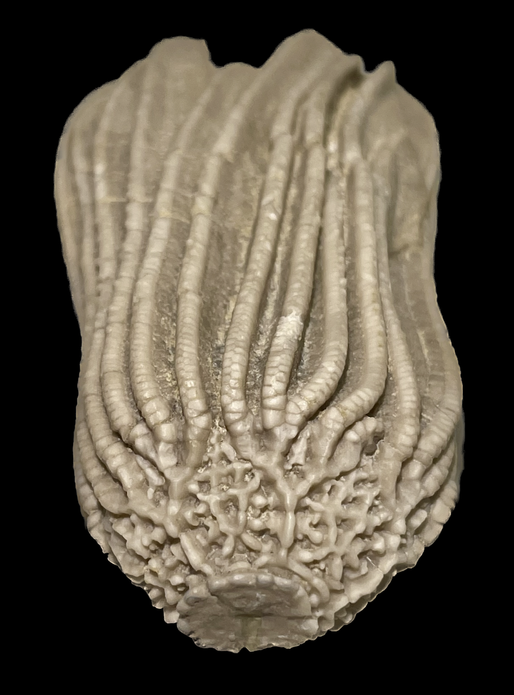
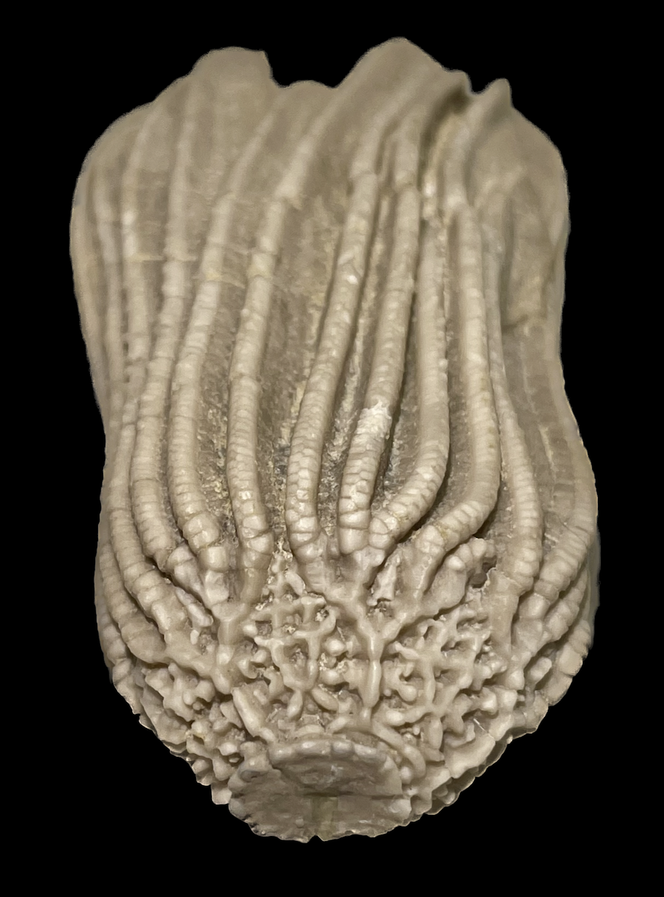

Cusacrinus ornatissimus
• Mississippian
• Hampton Formation/Maynes Creek Formation
• Le Grand, Marshall County, Iowa, USA
Size: 6 cm crown
A very distinctive camerate crinoid, readily identified by its extraordinarily ornate and low/wide calyx. The species name probably translates to "very ornate", the suffix "-issimo" also seen in "Fortissimo" to denote "very loudly" in the context of music. True to its name, this species' calyx is probably one of, if not the most, beautifully complex and ornate among all crinoids, with its uniquely discontinuous ornamentation. Even the infrabasal circlet is crenulated. This particular specimen is actually from the collection of none other than Lowell Laudon himself, who originally described the Le Grand crinoid fauna.
 
